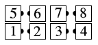

From all appropriate formations: The modifier "Stretch" is used as a prefix, applied to two- or four-person calls only. Do the 2- or 4-person call as usual, but the people who end in the center move to the center spots farthest from the dancers they had been working with (by moving along the long axis of the formation). For example, Stretch Recycle:
or Stretch Shake Down
or Stretch Turn and Deal
or Stretch Touch 1/4
or Stretch Touch:
If the centers cannot move along the long axis of the formation to get away from the ends they'd been working with, then the call is improper. For example, Stretch Swing Thru is not proper from here:

because after the Swing Thru, the centers would have to move along the short axis of the formation to get away from the ends.
Similarly, one may not call Centers Stretch Touch 1/4 from here

because the centers weren't working with the ends on the Touch 1/4.
Note: The examples above are here only to clarify the definition. They don't necessarily represent good usage-- particularly Stretch Turn and Deal from left-hand two-faced lines. Common applications include Recycle, Ah So, and Turn and Deal (from right-hand two-faced lines).
Teaching Hint: This call is usually danced with those coming to the center actually going to the far center spots, rather than first completing the move on their own side.